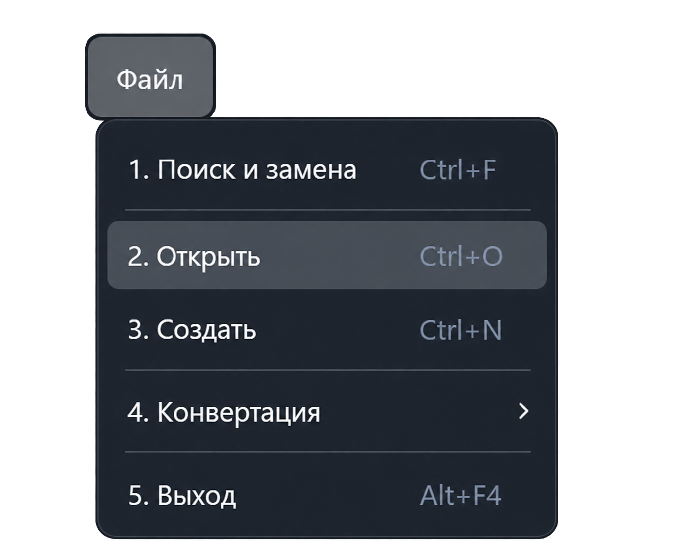

Открыть файл
Открывает программы контроля, архивы, протоколы и текстовые файлы.
- В меню
- Файл → Открыть
- Клавиши
- Ctrl + O

Как открыть файл
- Выберите Файл → Открыть или нажмите Ctrl + O.
- В окне «Выберите файл» найдите нужный файл. При необходимости выберите фильтр по типу файла.
- Дважды щёлкните файл или выделите его и нажмите Открыть.
Можно выбрать несколько файлов и открыть их одновременно.
Во время работы с аппаратурой открытие файлов недоступно. Сначала завершите выполнение.
Типы файлов
Фильтр в диалоге ограничивает список отображаемых файлов.
| Фильтр | Содержимое | Расширения |
|---|---|---|
| Supported files | Все поддерживаемые форматы | Все перечисленные ниже |
| PK/PKW files | Программы контроля | .pk, .pkw |
| OPK/OPKW files | Архивы программ контроля | .opk, .opkw |
| Protocol files | Протоколы | .asktrace, .askresult, .askreport |
| Legacy protocol files | Протоколы прежних форматов | .lst, .lstw, .rtlst |
| ACS files | Тестовые шаблоны | .acs |
| Text files | Текстовые файлы | .txt |
| All files | Все файлы без фильтрации | *.* |